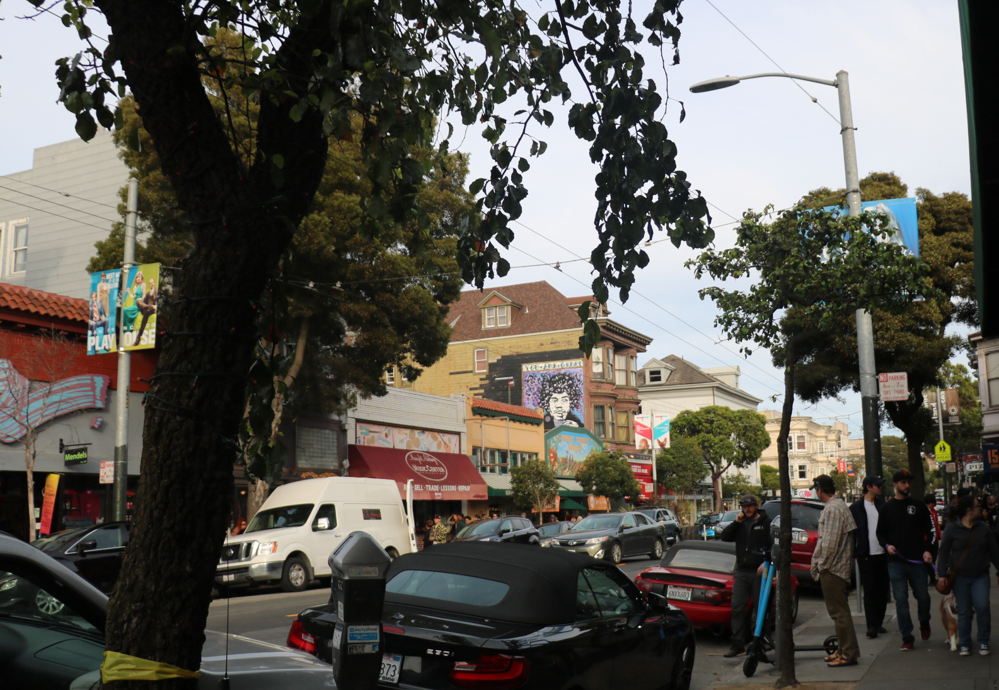
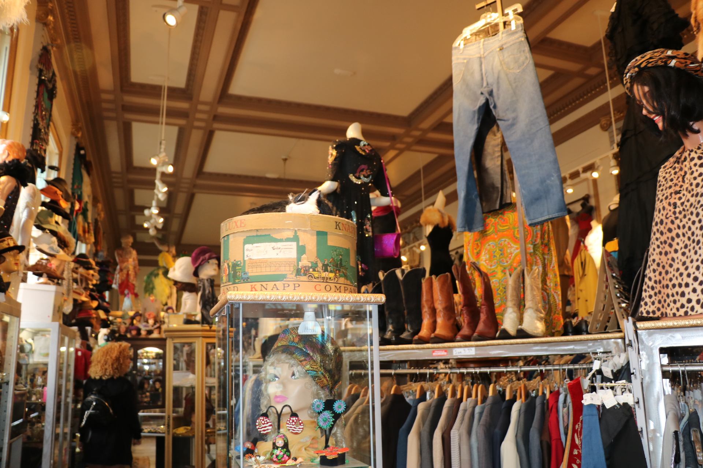

Haight Ashbury
Haight-Ashbury is by far, my favorite district in San Francisco. This neighborhood is famous for being the birthplace of hippie counterculture in the 1960s. It became a haven for young people across the country who protested capitalism, consumerism, and everything 1950s America is famous for. Haight-Asbury became a community based upon countercultural ideas, drugs, and music. The summer of love, in 1967, marked the entrance of psychedelic rock music into the mainstream, for which Haight-Ashbury served as a hub. Jefferson Airplane, the Grateful Dead, and Janis Joplin all lived very close to each other and were huge members in the Haight community. Today, the Haight is a still a heart of counterculture fashion, music, comedy, and food. Many newer bands can be found playing concerts there, and every summer the Haight-Ashbury Street fair is a weekend long celebration of art, music, and free love. You can still find loads of tie-dye in the thrift stores and the occasional vagabond wandering from here to nowhere.
Love on Haight
Love on Haight is one of my favorite stores in Haight-Ashbury. It is filled wall-to-wall with every imaginable article of clothing tie-dyed with pastels, vibrant colors, or weird patterns. Everything you need to become a modern day music-loving flower child lives in this store. There is also wonderful history about the Haight and the influence the Grateful Dead had on the district in a little waiting area in the back. If you want to meet some original hippies who thrived in Haight Ashbury in all its glory, the owners of this store are your people. Plus, the vibes are pretty groovy!

Grateful Dead House
The Grateful Dead House (710 Ashbury St) is another super cool landmark in Haight Ashbury. This is the house the Grateful Dead lived in throughout the late 60s-early 70s while making some of their earlier hits, and while the counterculture movement in the Haight was thriving. A beautiful townhouse with a lot of creative energy, this house is a must-see for any Dead Head, or person trying to understand what is going through the heads of all the hippies twirling around this part of San Francisco.
Decades of Fashion
Decades of Fashion is like the letterform archive of vintage clothing. Authentic, beautiful clothing from all classic American decades starting in the 1920s has a home in this hidden gem of a thrift store. Looking for accessories, shirts, pants, dresses, or anything in between? Every single thing for sale inside Decades of Fashion has its own unique story, and will make your wardrobe about 30x better. (My favorite personal purchase from here is a sky blue 1970s cowgirl shirt). One of the best stores in all of San Francisco, Decades of Fashion makes Haight Ashbury even cooler - if that’s even possible.

Haight Poster Store
One of the best aspects of the Haight is all of the musical influence. There are countless murals, music stores, and usually there’s music playing. One of my favorite parts of music culture is the merchandise - especially band posters. Right underneath some giant heels exiting a window is Haight Ashbury Posters, a great store for vintage band posters, prints, postcards, tapestries, and more. There are some pretty rad posters from past Haight Ashbury street fairs, as well as lots of fun psychedelic art pieces. It’s also a smoke shop - if anyone wants to **legally** participate in consuming California’s favorite plant. This store will provide a very authentic Haight Ashbury experience and is quite the trip.

Summer of Love Burger Urge!
Are you hungry? For some good art or possibly a burger? The Burger Urge, on the corner of Clayton and Haight St is the place to get both. I don’t eat meat, but my friends who do say the Burger Urge is absolutely delicious, their fries are awesome and the burgers are nice and juicy. On top of the Burger Urge is a mural of the Summer of Love and some of its primary influencers - Jerry Garcia, Janis Joplin, and all of their hippie children frolicking around them. The blue sky of the mural and the red trim of the building are really nice visual compliments, and the mural is just weird enough to fit right in on Haight Street. This is one of my favorite buildings to walk by and absorb every time I find myself wandering along.